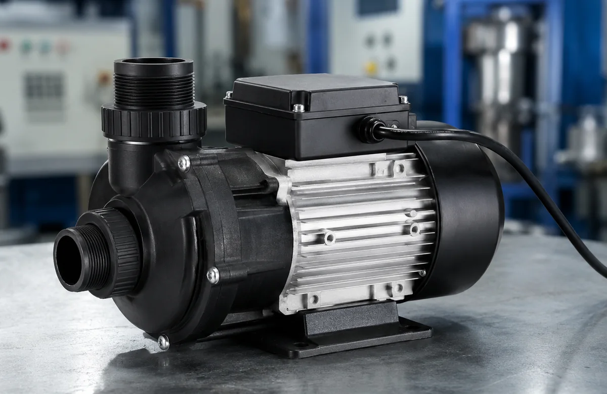
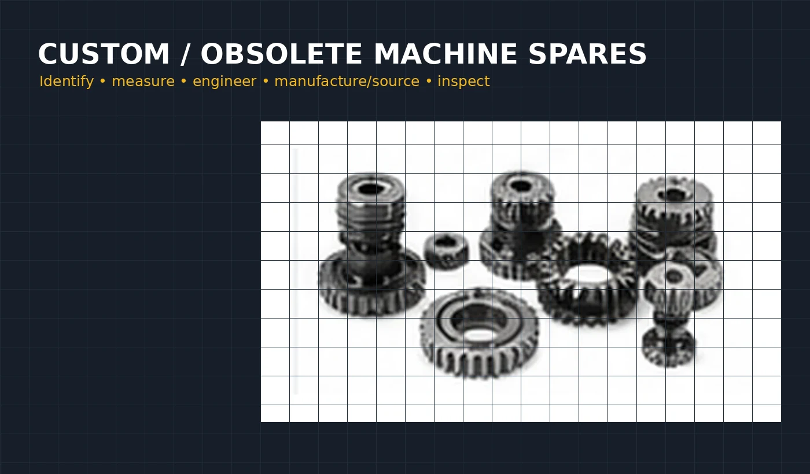
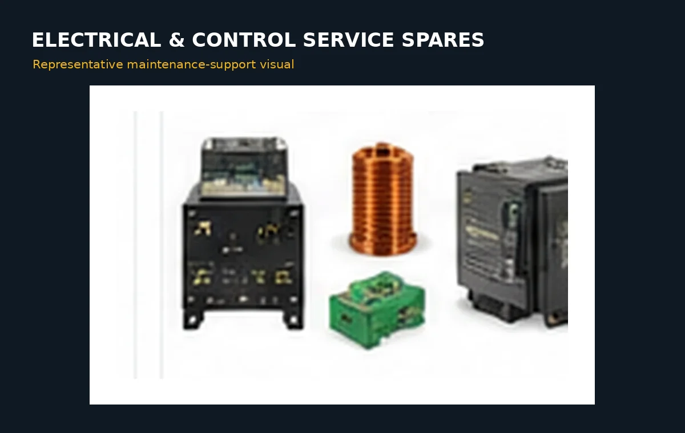

Identification
SS304 QR Identification Plates
Reference configuration: 70 × 70 × 0.5 mm SS304, rounded corners, holes and individual QR marking with readability verification.
Selected examples used to explain the types of industrial requirements Crecer Grande can support. Representative visuals do not necessarily depict a specific completed customer project.
Reference configuration: 70 × 70 × 0.5 mm SS304, rounded corners, holes and individual QR marking with readability verification.

Compatibility-led replacement based on pump duty, electrical rating, mounting, ports and chiller model rather than appearance alone.

Use sample parts, photos and critical measurements to create a replacement engineering route when original spares are difficult to source.

Prototype and low-volume resin printing with optional brass insert fixing at defined locations where feasible.

Support for sensors, relays, PLC/HMI modules, signal checks and selected retrofit or monitoring requirements.

Measurement, CAD modelling, drawing development and manufacturing support where legacy drawings are unavailable.